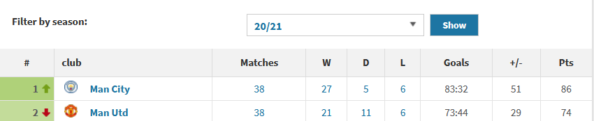
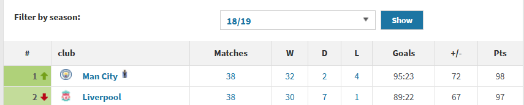
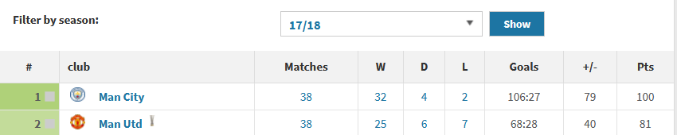
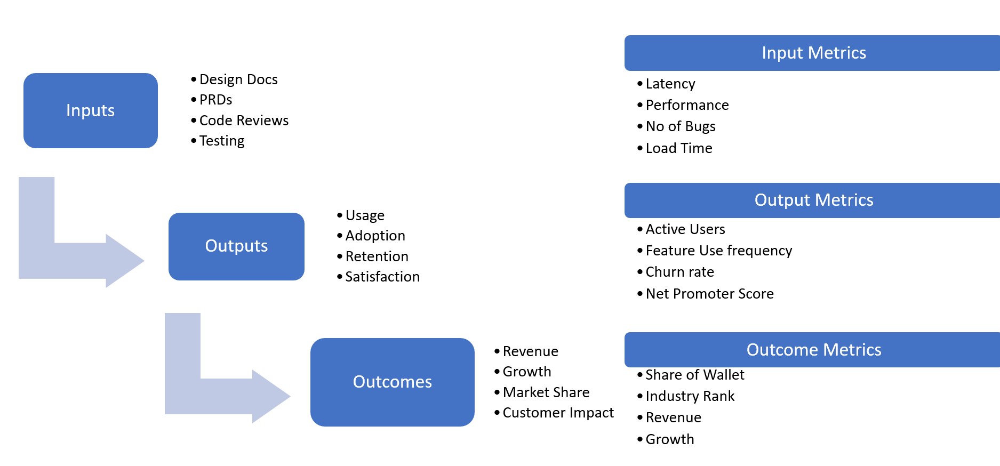
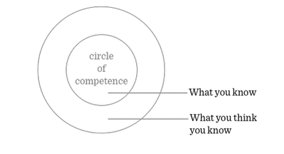

1986 -2013. That is how long Sir Alex Ferguson managed my beloved Manchester United. It was truly a dynasty. He built, tore-down and rebuilt arguably four different, successful teams over that period – and boy! The trophies rolled in.
13 Premier League titles
5 FA Cups
2 European Cups
It was the best of times.
In the 9 years since his retirement, Manchester United’s record reads
0 Premier League titles
1 FA Cup
0 European Cups.
What explains this stunning fall from grace? An easy answer is the colossal ineptitude and incompetence of the Manchester United board and owners. That indeed is a good answer but failure is often the consequence of a series of poor decisions, unconscious biases and mistakes. I think a careful analysis will reveal more nuanced lessons that businesses of all sizes and teams at all levels can learn from.
Manchester United is not the only example of an organization that thrived under one leader and then stumbled under the stewardship of another. GE after Jack Welch, Exxon Mobile after Lee Raymond and Microsoft after Bill Gates are some other high-profile examples.
You will see that there are common themes across all these examples which suggest measures to prevent this from happening at our firms and teams.
Perils of Centralization
What one-man giveth, one-man taketh away
What unfolded at Manchester United over the last 35 years is a valuable lesson on the upside and pitfalls of centralization. When decision making authority is concentrated in the hands of a single individual, the institution can thrive provided the individual is highly competent.
Sir Alex reigned supreme at Manchester United for 26 years. His influence pervaded everything at Manchester United, from the boardroom to the boot room. The club thrived as long as one of the greatest managers ever was at the helm.
However, just as an individual gets institutionalized and becomes dependent on an institution, the institution can become overly dependent on an individual. When this individual steps away, it is as if the institution’s central nervous system has been yanked away. The entire system works as long as this critical piece is in place, but the system now has a single point of failure. When Sir Alex stepped away, the system collapsed.
Exxon Mobile under Lee Raymond is another example of a company that thrived under centralized decision making but lost their mojo under new leadership.
The only way to overcome this overreliance on an individual is to create a strong, decentralized culture with empowered, autonomous teams. Netflix and Amazon are examples of companies that have successfully done this.
In his book “No Rules Rules”, Reed Hastings writes
A loosely coupled organization should resemble a tree rather than a pyramid. The boss is at the roots, holding up the trunk of senior managers who support the outer branches where decision are made
At Amazon, software engineers are organized into autonomous “two-pizza” teams of no more than 10 people. These teams avoid dependencies and communication overheads by publishing well documented APIs1 that teams can use to consume each other’s products.
Teams, not just organizations, can fall prey to centralization. Teams very often come to over rely on certain individuals for critical tasks. Google’s engineering team tracks the “bus-factor” for their teams – The number of people that need to get “hit by a bus”2 before the project is completely doomed.
It is essential that we track dependencies, encourage knowledge sharing and cross-training within our teams if they are to stay resilient over time.
Obsolete Beliefs
The world changes and Change is hard to predict. Sometimes change is slow and you realize it too late much like the proverbial frog being boiled to death.
It is human nature that our confidence in our beliefs rises if it leads to success. In a static world, it is rational to have monotonically increasing confidence in these beliefs3.
Manchester United had been successful when Sir Alex controlled all aspects of club management; from first team coaching to recruitment to the academy. The club believed the recipe for success was to find a good manager and vest him with authority to run all football operations.
The club failed to see that in the modern game these demands would be too onerous for a single person to handle and that other clubs had adopted a more decentralized approach to football management – with a sporting director handling football operations and a head coach focused on coaching the first team.
At Exxon4, in the 80’s and 90’s, Lee Raymond focused on profitability by selling off high-cost operations and focusing on low-cost assets and operations. This was appropriate when oil costs were low, but as the business environment changed and oil prices began to rise, Exxon continued to hold on to these obsolete beliefs. Consequently, they were too late to invest in new oil fields and assets that mattered for the subsequent 20 years.
At Microsoft, Steve Ballmer’s Windows and Office Centric view of the world were obsolete in a world where computing moved from desktops to smart phones. He continued to see non-Windows mobile platforms like IOS and Android as competitors much like he saw non-Windows desktop platforms as a competitor.
In order to escape this Obsolete Belief trap, organizations need a Re-founder5.Re-founders with a fresh perspective, a different set of beliefs and a willingness to let go of the past can realign and refocus the organization, reset its culture and allow it to adapt to a changing world.
Satya Nadella is the epitome of this re-founder. He made a clean break from the past, transforming Microsoft into a collaboration focused, open source friendly, platform agnostic, cloud services provider6.
Within our teams, it is critical that we stay open minded and actively look for evidence to disconfirm our beliefs. We should not become wedded to processes and must constantly re-evaluate whether they serve the team’s goals.
Misattribution
One of the consequences of success is that you seldom pause to reflect on why you succeeded. When you fail, you have good reason to analyze and identify the root cause of your failure. When you succeed, you attribute your success to everything you did.
If you are not careful, you can mistake correlation for causation and internalize the wrong lessons. This is what happened at Manchester United. The club seems to have internalized two lessons from the Ferguson years:
- Sir Alex took six years to win a trophy so any manager should be given time to succeed.
- It was the stability offered by having a single manager at the helm for so long that resulted in success.
The key lessons the club seems to have forgotten are
- Sir Alex had proven himself in Scotland and in Europe before taking the reins at United. So, it is more important that the right manager be given the time and resources to succeed.
- Stability does not breed success. Only progress breeds stability which in turn breeds success. Unless there are clear measurable signs of progress, there cannot be stability and hence no success.
By failing to identify the causative factors for its previous success, Manchester United could not reproduce its success.
As Charlie Munger recommends7
● Carefully examine each past success, looking for accidental and non-causative factors associated with such success that will tend to mislead as one appraises odds implicit in a proposed new undertaking
● Look for dangerous aspects of a new undertaking that were not present when past successes occurred.
Within our teams, we need to do detailed post-mortems even after successful projects, not just failed ones. It is said Failure is life’s greatest teacher but let us not turn a deaf ear to the lessons Success can teach us.
Vanity Metrics
As I asserted earlier, only progress breeds stability, which in turn breeds success. No sports team wins the championship and no business wins a market overnight – there has to be a period of steady progress and it is critical that we have actionable metrics to measure this progress and course correct as needed.
Manchester United fell into the trap of using the league position as a metric for progress. United finished 2nd in 2018 and then 3rd and 2nd in 2020 and 2021 respectively. This metric on its own, devoid of context is highly misleading – a vanity metric.
Vanity metrics are metrics that make you look good to others but do not help you understand your own performance in a way that informs future strategies8
For instance, in the three seasons below, placing second means very different things. The points differential with the first placed team says more about the performance and potential of the team than the position in the table.

Figure 1: Man Utd finished 12 points behind the champions in 2021, currently United sit in 4th place 19 points behind the leaders

Figure 2: Liverpool finished 1 point behind the champions in 2019, they won the title the next year

Figure 3: Man Utd finished 19 points behind the champions in 2018, they finished 6th 32 points behind the champions in 2019.
To measure progress, Manchester United needed to track metrics that accurately capture real progress. Pairing league position with a suitable counter metric such as points differential or expected goal differential would have been a start.
Companies and teams should carefully design and track actionable input metrics, output metrics and outcome metrics9.They should also select a north star metric (one specific outcome metric) which the whole company is aligned towards.

However, most outcome metric such as revenue tend to be a lagging measure of the performance of multiple teams – marketing, sales, pre-sales and product. It does not provide timely or actionable feedback on the performance of a specific team. To identify meaningful metrics, we need to identify the factors (inputs and outputs) that drive the desired north star metric – be it revenue, growth or market share- and then track those closely.
For example, the Amazon flywheel below clearly identifies the factors that impact growth. Teams at Amazon rigorously track metrics that capture costs, prices, selection, customer experience etc. These are the metrics that they strive to improve.
The book Working Backwards goes into detail on how this process works at Amazon.
Circle of Competence
Warren Buffet and Charlie Munger famously ascribe to a Circle of Competence when making investing decisions.
“If we have a strength, it is in recognizing when we are operating within our circle of competence and when we are approaching the perimeter” – Warren Buffet

At Manchester United, the executives and leaders at the club did not recognize their circle of competence.
Sir Alex excelled at recruiting coaches and players, but did not recognize that hiring a new manager to run the team is outside his circle of competence. Instead of following a rigorous process to identify the next manager, he simply anointed David Moyes as the manager with predictable consequences.
Ed Woodward, the former head of commercial operations at the club when promoted to CEO, refused to accept that running football operations was outside his circle of competence. The consequence was a series of bad decisions that set the club back by years.
Even in the corporate world, some companies have paid dearly for not recognizing their circle of competence.
General Electric was the foremost engineering company in the world in the 90’s. It has expertise in technology and engineering going back a hundred years to the 19th century – that was its circle of competence. However, in the 90’s it decided to turn itself into a major player in finance as it looked to boost returns to shareholders. Venturing outside its circle of competence proved very costly to GE as the financial crisis in 2008 nearly crippled the company10. Since then it has sold if its financial assets and has strived to return to its engineering roots.
As employees, managers and leaders we should recognize our circle of competence and listen to those closest to the problem. When transitioning between functions – say marketing to sales, we need to understand that being good at one doesn’t automatically make you good at the other. Without a beginner’s mindset, overconfidence can lead you to venture outside your circle of competence.
As Adam Grant writes in his book Think Again
Knowledge is power, knowing what we don’t know is wisdom.
Culture, Mission and Vision
All successful organizations have a clarity of vision – a clear statement of the future they are trying to create and a clear mission - how they will bring this vision into reality.
E.g., Amazon’s vision is “to be Earth’s most customer centric company, where customers can find and discover anything they might want to buy online”.
Its mission is “to offer our customers the lowest possible prices, the best available selection, and the utmost convenience”
Successful companies also have a strong culture – a shared consciousness and a set of values that guides the organization in decision making, recruitment, goal setting and prioritization.
Manchester United had no clear vision or mission at least when it came to matters on the pitch. It had no well-defined culture or set of values beyond playing “attacking football” and being “patient” with managers. Ex-players and fans talk about a “United Way” but could not concretely describe what it meant and what its core principles are.
Without this guiding vision, the club had no long-term planning, adopted a scatter gun approach to recruiting managers and players and had no systematic way of defining metrics that tracked progress towards the right goals. The results of the club on the pitch consequently suffered.
Getting people to buy into the company’s vision and mission and creating a strong culture to support is perhaps the highest leverage activity a leader or a founder can do.
Leaders need to create a drumbeat11 of mission, vision and culture, live the same and inspire the rest of the company to march in unison to that drumbeat. Leaders have to communicate this clearly and repeatedly even when they are sick of doing so, before their teams internalize it. They have to clearly describe how the decisions they made were rooted in the company’s values so that employees can see it in action.
Netflix’s culture doc , Amazon’s leadership principles and Coinbase’s culture are examples of a clear, well-defined culture. It leaves no doubt as to what these companies value, encourage and reward.
However, it is not just enough to state and communicate cultural values. You need to create mechanisms and processes to nurture this culture and ensure it manifests in the employee’s actions and decision making. Netflix’s “Farming for Dissent” and Amazon’s “Working Backwards” are great examples of these mechanisms.
If leadership only pays lip service to their culture and values in town halls and on the walls of their offices, without creating the mechanisms to foster that culture, it will be a futile exercise.
Even if you are leading a team of five rather than a company of five thousand, clearly defining the vision and mission of your team and explaining how it aligns with the vision and strategy of the company can greatly empower your team.
Recruitment and Talent Development
In professional sports and the knowledge industry, talent is king. People are your greatest asset. Only recruiting and retaining the best allows you to be successful.
Manchester United’s owners cannot be accused of penny pinching when it comes to recruiting or compensation. They club has spent more on transfers12 over the last 10 years and has a higher wage bill13 than any other club in England. They have signed proven world class players and paid them astronomical wages. Yet, the return on that investment has been terrible.
Liverpool on the other hand have been far more economical in the transfer market, they are not even in the top 10 for net transfer spend yet have built a team that are capable of challenging for the highest prizes. Man City have spent heavily but also have the trophies to show for it.
The key difference is Liverpool and Man City have a clear vision of how they want to play and the system they want to play. They only buy players that fit the system rather than buy players on reputation or potential and try to improvise a system to accommodate these players.
Significantly, very few players that Manchester United have signed over the last 10 years have gone on to become consistent performers on the pitch. Further underperforming players have been rewarded with new contracts instead of being let go. This points to deficiencies in identifying and evaluating talent and an inability to make hard decisions to correct hiring mistakes.
Further, several promising players joined Manchester United who failed to live up to their potential. Their performances in fact regressed considerably. On the contrary, Liverpool and to a lesser extent Man City have signed players who appeared underwhelming on paper but have developed into top class players. This points to an inability to coach and develop talent.
There are several takeaways here.
First, simply hiring the best people you find does not work, you need to hire people that complement your current team and fully buy into your company’s vision and can adapt to its culture.
Second, you need to have a rigorous, thorough process to evaluate talent and a culture that holds people accountable for their performance. Under performing talent has to be let go.
Third, you need to be able to groom, develop and coach the talent you recruit so that they fulfill their potential. If you can do this you can build strong teams even without paying over the top for talent with the glitziest credentials.
I don’t believe great recruitment is possible without a clarity of vision and mission and a strong culture.
Only a compelling vision, and mission will allow you to recruit and retain missionaries who believe in the company’s mission. Hiring missionaries rather than mercenaries is a key tenet of Amazon’s recruitment policy. Amazon caps their base salary at levels below their competitors as they believe working at the company should be about more than just money. The fact they have succeeded is down to them having an inspiring mission, vision and culture that can attract and retain such talent.
Informal, adhoc interviewing is prone to biases and is heavily dependent on interviewers making the right gut call. Only a rigorous, scalable and repeatable hiring process can ensure that a company consistently hires the right talent. Amazon has carefully crafted a “Bar Raiser” process to do just this.
From empowering “bar raisers” who can veto a hiring manager’s decision, to designing behavioral interviews designed to evaluate potential hires on leadership principles, to training interviewers on how to run interviews and debrief sessions afterwards – the bar raiser process allows Amazon to maintain standards even as it grows fast.
“A players attract A players. B players attract C players.” – Steve Jobs
Without a system to identify high quality talent, the talent density at the company will go down and standards will slip.
Netflix has created a performance-oriented culture where “adequate performance gets a generous severance package”. Netflix asks managers to run a Keeper’s test for their reports. In the book “No Rules Rules” Reed Hasting writes.
“If a person on your team to quit tomorrow, would you try to change their mind? Or would you accept their resignation, perhaps with a little relief? If the latter, you should give them a severance package now, and look for a star, someone you would fight to keep”.
This might sound harsh, but the key is you need an error correcting mechanism that can correct recruiting errors. Only a system that can identify and fix errors can improve.
Finally, companies need to incentivize managers to coach and develop employees.
“Coaching is no longer a specialty; you cannot be a good manager without being a good coach” - Bill Campbell
It is unfortunate that most companies do not evaluate managers along this dimension or incentivize them to take coaching seriously. Organization that requires this from every manager will see higher performing individuals and teams and are far more likely to thrive.
Conclusion
Creating institutions that outlast its visionary leaders and continue to thrive and grow in a rapidly changing environment is extremely hard.
It requires creating autonomous, decentralized teams, being open minded to changing our beliefs, deeply analyzing our failures and successes, being wise to admit what we don’t know and ask for help, creating an inspiring mission and vision that people believe in, nurturing an adaptable culture that allows people to thrive and grow, recruiting, coaching and if needs be, letting go of people.
Amazon prides itself on being a Day 1 company. When asked what Day 2 looks like, Jeff Bezos replied
Day 2 is stasis. Followed by irrelevance. Followed by excruciating, painful decline. Followed by death. And that is why it is always Day 1
In 2013, when Sir Alex stepped down, Manchester United became a Day 2 company. Learning the right lessons from its decline can help us avoid a similar fate.
Acknowledgements
Thanks to Neeraja Suresh Kumar and Aparna Gautham for comments and feedback.
Footnotes
This is just a metaphor for someone leaving your team for any reason↩︎
http://paulgraham.com/ecw.html↩︎
https://www.joincolossus.com/episodes/74059914/murti-exxon-mobil-an-aging-energy-empire?tab=blocks↩︎
https://mastersofscale.com/nadella/↩︎
https://stratechery.com/2018/the-end-of-windows/↩︎
https://www.tableau.com/learn/articles/vanity-metrics↩︎
https://mixpanel.com/blog/shreyas-doshi-product-metrics/↩︎
https://www.investopedia.com/insights/rise-and-fall-ge/↩︎
https://mastersofscale.com/jeff-weiner-how-to-set-the-drumbeat/↩︎
https://www.footballtransfers.com/en/transfer-news/uk-premier-league/2021/09/transfer-net-spend-man-utd-clubs-who-have-spent-most-10-years↩︎
https://www.spotrac.com/epl/payroll/↩︎